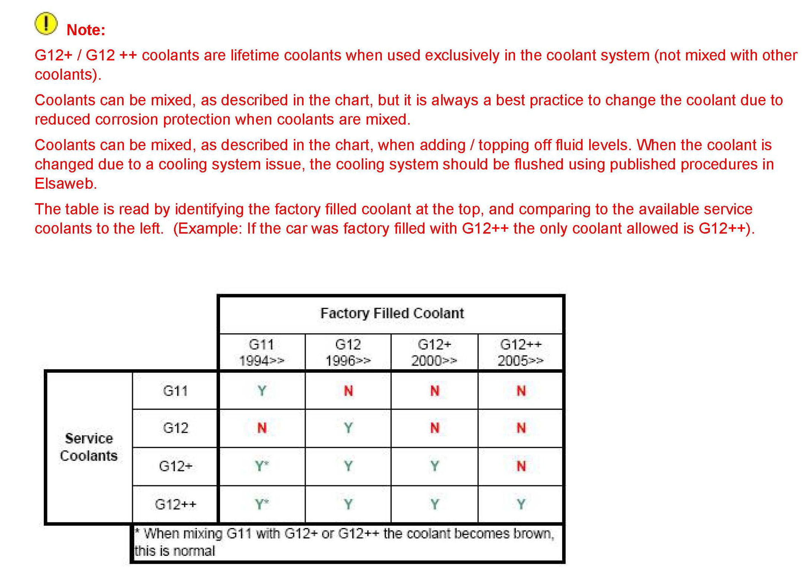

Cooling System - Coolant Identification/Mixing
19 10 03March 18, 2010
2022548 Supersedes T.B. Group 19 number 10-02 dated March 17, 2010 to improve coolant table view.
Condition
Identifying and Mixing Factory Fill Engine Coolants
Discontinuation and mixing of Volkswagen approved engine coolants.
Technical Background
Coolants G11, G12 and G12+ have been replaced by an improved version.
New coolant G12++ will be introduced on all engines.
Production Solution
No production change required.
Service.
Identify which coolant the vehicle was filled with from the factory.
The photo shows the color of each type of engine coolant.

The table identifies which coolant can be added to the factory coolant.
Tip:
If a vehicle is found to have the incorrect coolant, the cooling system should be flushed using the repair manual procedures in Elsa Web and then filled with the correct coolant.
Note:
Cooling system flushing due to coolant mixing or incorrect coolant is not covered by warranty.
Warranty
Information Only.
Required Parts and Tools
No Special Parts required.
No Special Tools required.
Additional Information
All part and service references provided in this Technical Bulletin are subject to change and/or removal. Always check with your Parts Dept. and Repair Manuals for the latest information.